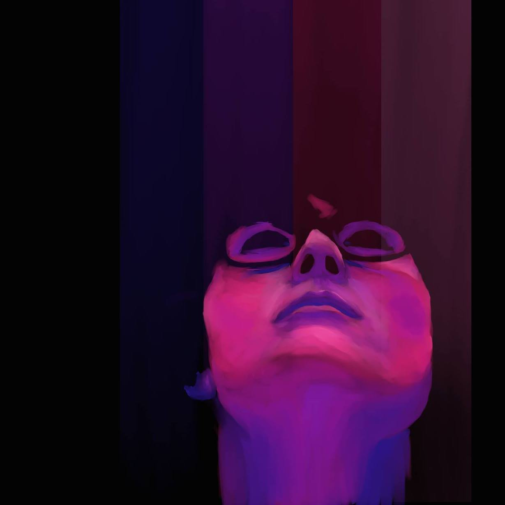

Hi, I'm Liz Thomas
Currently I am: a student @ Epicodus

Check out my work:
Vacation Website
Link to GitHub Repository
This website was made about a place that my pair programming partner and I wanted to visit. We chose Vancouver, BC. We included reasons for going there and added silly content for the Vacation Packages at the bottom of the page. We used Bootstrap to create the columns and rows at the bottom of the page.
Languages Used:
This site was Co-authored by: Isaac Overton
Adoption Website
Link to GitHub Repository
This is a website for a Ped Adoption site called "In the arms of an Angel" that was made while pair programming at Epicodus. We made columns and included images, and list of pros and cons for each animal. This site shows our work using cascading styles.
Languages Used:
This site was Co-authored by: Isaac Overton
Private Island Resort Website
Link to GitHub Repository
This is a website for a private island resort called Pizza Island Resort that was made while pair programming at Epicodus. This site illustrates my ability to link to other pages, include images, and use styling. During this project, I was able to practice branching to experiment with styling options.
Languages Used:
This site was Co-authored by: Kate Kiatsiri
Vacation Blog
Link to GitHub Repository
This is a blog post about vacationing on the island of Lana'i that I created while at Epicodus. This site illustrates my ability to use Markdown. During this project I practiced linking to other pages, including images, and use styling.
Languages Used:
Dog Blog
Link to GitHub Page
This is a blog for my fake dog, named Canoe Dog, that I created while at Epicodus. This site illustrates my ability to use a variety of ways of using styling. During this project I practiced linking to other pages and including images.
Languages Used:
My First Website
Link to GitHub Repository
This is a website that I created while at Epicodus. This site illustrates my ability to use a block elements. During this project I practiced linking to other pages, sites and including images. I later went back and added CSS elements to give it some flair.
Languages Used:
Congratulations! You found my secret text!
About Me:
A Portland native, Liz Thomas has always been drawn to the digital realm, having begun playing around with basic digital art programs with her family’s first computer in the early 1990s. From there she moved onto illustrating in KidPix in the late 90s, to using early versions of Adobe Photoshop, and has endeavored into Adobe Illustrator, Premiere Pro, and Ableton Live. She also had a stint working with digitally controlled CO2 lasers to fabricate a wide variety of 3D projects. She hopes to use programming as a new platform to work creatively and help make the world a better and brighter place!